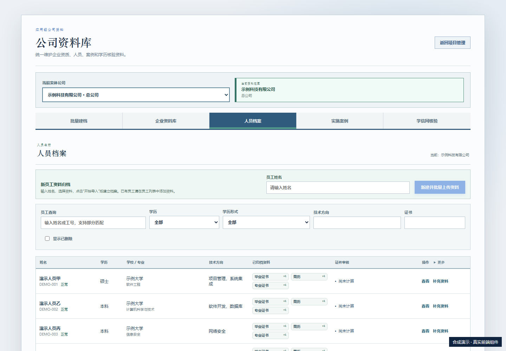
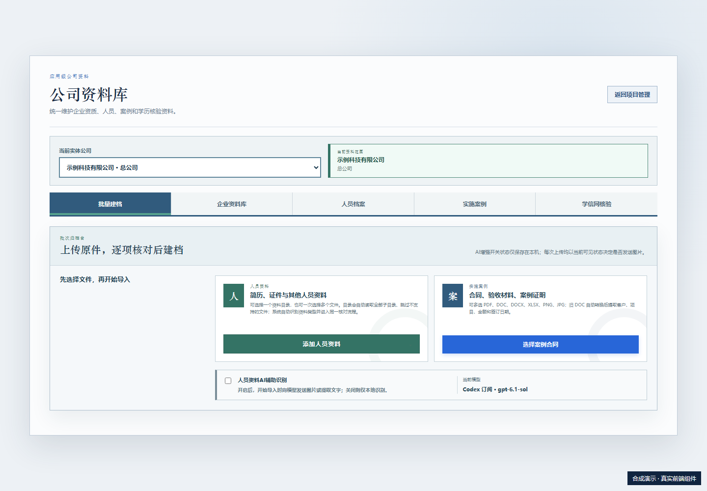
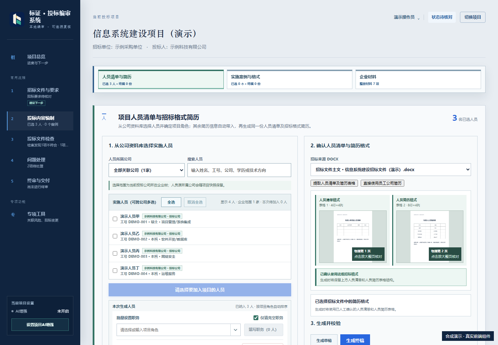

标证 0.4.7 · 日常使用
下面使用当前前端组件与合成数据，展示操作位置；机器候选及检查结果仍需人工核实。
人员整理
进入公司资料库与人员档案，按目录或多文件导入；逐项对照原件、处理分类与姓名差异，再确认入库。不要把自动识别结果当成已审核事实。

逐项核对
查看原始来源、缺项与冲突，确认重复资料的归属；保留原件与历史记录。

项目人员与简历
在项目企业材料中选择人员、岗位与必要附件，核对招标模板，再生成简历。按需要选择清晰压缩或保留原图；压缩后的材料仍须检查清晰度。已生成文件保留在项目导出记录，可打开文件或所在文件夹。

0.4.7 已修复导出继承模板只读保护的问题。新生成 Word 的文字可编辑，原生表格可插入行列；旧文件请重新导出或使用可编辑副本，原件保留。
重新导出会补齐已保存岗位，保留明确设置的项目经理岗位；核对人员清单与简历中的岗位一致。旧文件需重新导出，原件和历史选择保留。
检查与交付
运行两类检查，回看原件并处理问题，再人工终审与归档。归档不代表已递交。AI按用途授权，未配置时可继续使用本地资料与规则功能。企业信用、学信网扫码或验证码按官网提示操作。